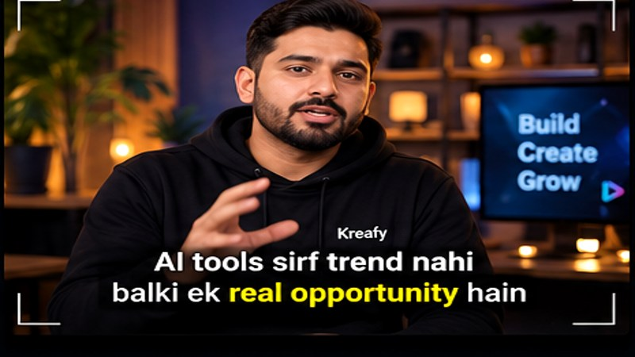

✦
KDocumentary Director
Line-level scene direction, image prompt and timing
Asset BrowserInput and scope
01
Scene 01 — HookSelect and configure
02
Scene 02 — ProblemPreview and verify before using
03
Scene 03 — EvidenceSaved in local project
04
Scene 04 — SolutionEditable • project scoped
05
Scene 05 — CTAInspect settings and references
Line-level scene direction, image prompt and timing
Scene InspectorPreview / review
Storyboard • Scene-by-Scene Review12 proposed shots

Scene 01
Opening Hook · Concept

Scene 02
Research Visual · Concept

Scene 03
Main Character · Concept

Scene 04
Detailed Shot · Concept

Scene 05
Key Example · Concept

Scene 06
Closing Scene · Concept
Inspector & Advanced ControlsPresets ▾
Video type⌄
Length⌄
Narration language⌄
Scene style⌄
Reference consistency
Human scene review
Captions
Scene duration7 sec
ⓘ UI review only. Actual engine availability, voice catalog, quotas and generation settings must be verified during implementation. No feature is running.
Timeline & TracksUndo ↶ Redo ↷ Split ✂ Zoom ⊕
00:0000:1000:2000:3000:4000:50
Scenes
Scenes 1Scenes 2Scenes 3Scenes 4
Voice
Voice 1Voice 2
SFX
SFX 1SFX 2
Captions
Captions 1Captions 2Captions 3Captions 4